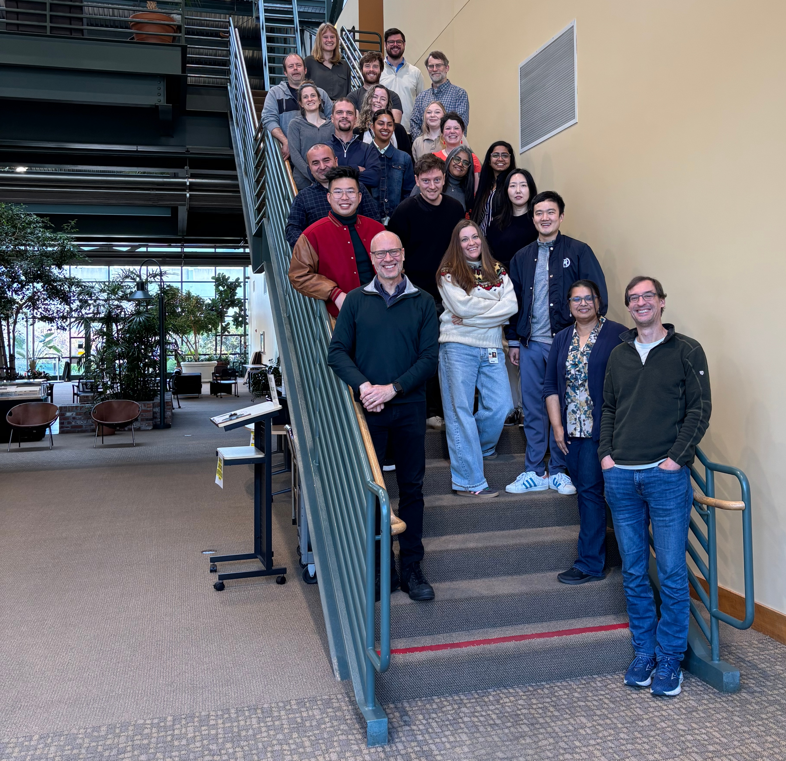
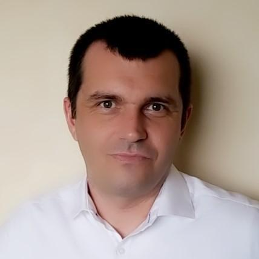
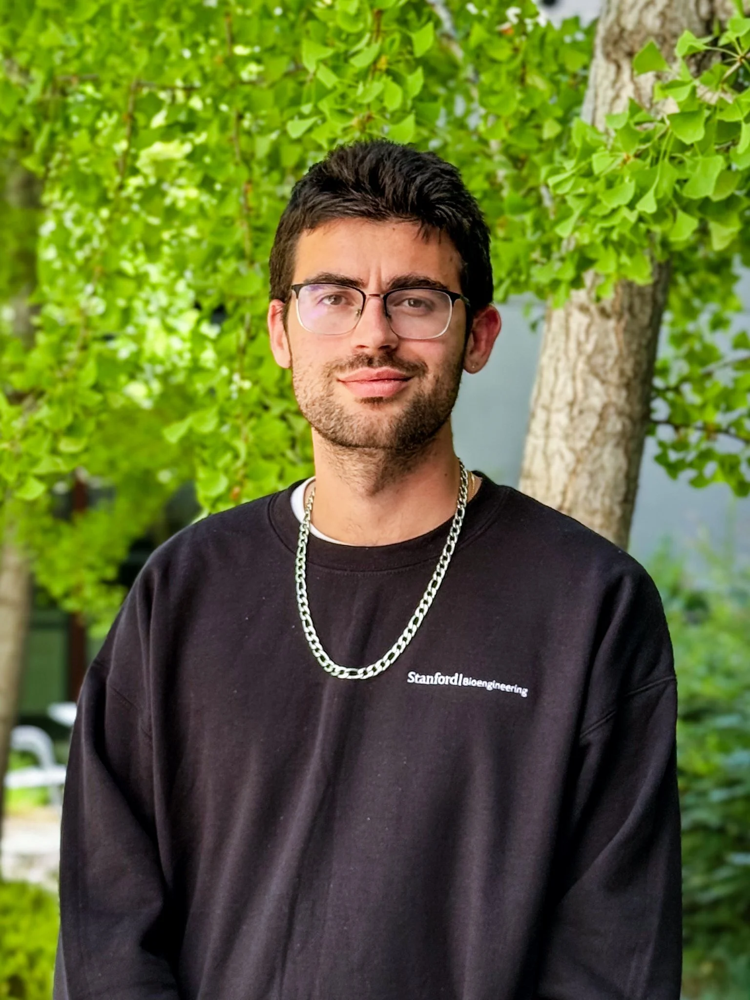
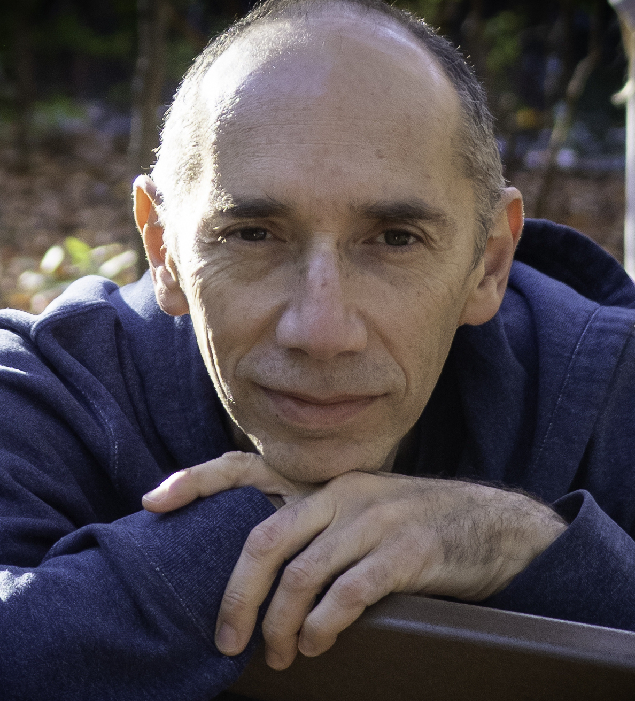
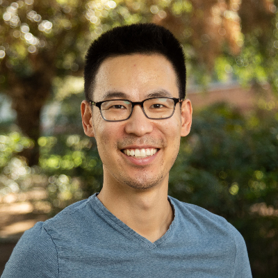
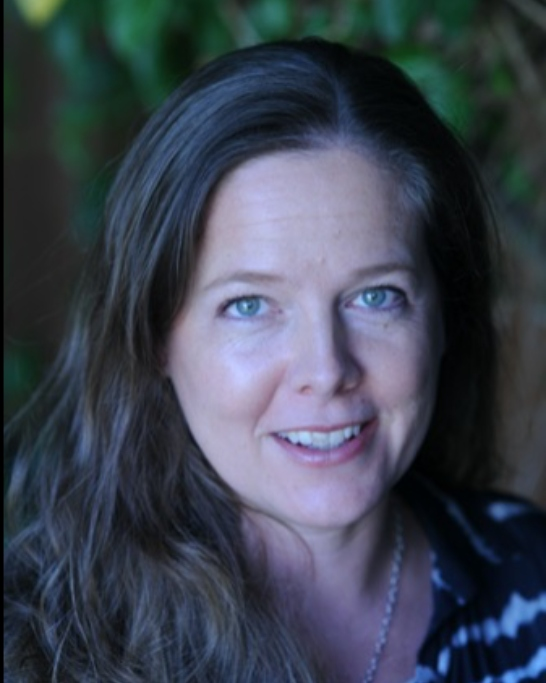

Principal Investigators
The m-CAFEs team brings together 12 leading researchers across 6 institutions, combining deep expertise in microbial genetics, phage biology, plant biology, metabolomics, AI/ML, and environmental microbiology.

Trent Northen
Adam Deutschbauer
.jpg)
Jennifer Doudna
Jillian Banfield
Rodolphe Barrangou
Romy Chakraborty

Aymerick Eudes

Vayu Hill-Maini
Aindrila Mukhopadhyay

Daniel Segrè

Mingxun Wang
Kateryna Zhalnina
Program Management
The m-CAFEs SFA is led by Trent Northen (Laboratory Research Manager) and Adam Deutschbauer (Technical Co-Manager). High-level project management support is provided by Caitlin Chiang and Suzanne Kosina.
External Collaborations
m-CAFEs collaborates with the three SFAs co-located in BioEPIC — Watershed, ENIGMA, and Belowground Biogeochemistry — and with PNNL, LLNL, ORNL, and LANL, including other Science Focus Areas and Bioenergy Research Centers.
Scientific Advisory Board

Britt Koskella
Phage ecology and the role of bacteriophages in shaping microbial communities.
Maria Harrison
Plant-fungal interactions, mycorrhizal symbiosis, and plant-microbe signaling.
Yunha Hwang
Artificial intelligence and machine learning for biological systems.

Dianne Newman
Microbial metabolism, geobiology, and how microorganisms shape Earth and human health.